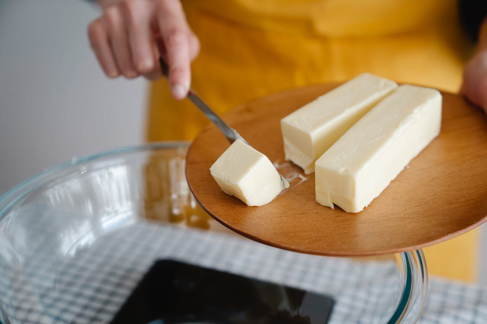

Lesson 19
UNIT 3
Livestock processing technology
BASIC PROCESSING TECHNOLOGIES OF ANIMAL PRODUCTS

Butter and cream manufactur
Learn the active vocabulary of the Lesson and be ready to
use it in your further work:
Butter
n – масло; margarine
n – маргарин; manufacture
n – виготовлення; production
n – виробництво; cream
n – вершки; churn
v – збивати,
збовтувати; a
rotating drum – обертаючийся барабан; so that – щоб; для того, щоб; fat globule – жирова кулька; separate v – відокремлювати; liquid adj – рідинний; butter-milk – сколотини; пахта; milk
fat / butterfat – молочний жир;
salt
n – сіль;
substitute
n – замінник;
mixture
n – суміш;
brine
n – розсіл;
охолоджуючий соляний розчин; edible
adj – їстівний;
almost
adv – майже;
crate
n – ящик;
cream
– вершки;
крем; whipping/whipped cream – збиті вершки; single cream – одинарні вершки (жирність 18 %); double cream – подвійні вершки (жирність 48 %); clotted cream – вершки, що скипілися; skimming off – збирання (вершків, піни); derive v – отримувати, одержувати; походити (від); fatty layer – жировий шар surface поверхня; separator
n – сепаратор; desired
adj – бажаний; fat content – жирність; obtain v – отримувати, одержувати; specify v – точно визначати; compare with – порівнювати з.
Read
and translate the text:
BUTTER
AND MARGARINE Butter Butter
is made by churning cream in a rotating drum so that the fat globules separate
from the liquid butter-milk. Butter must contain about 80 per cent milk fat and
not more than 16 per cent water. During manufacture 1-2 per cent of salt is
added to salted butter. Butter
is made from dairy
milk and salt.
Margarine, on the other hand, can be made from a variety of substances. The
first of these is any edible animal or vegetable oil such as corn oil or
sunflower oil. Its liquid component can be made from milk, water, or sometimes a
liquid protein mixture derived from soybean. To
make butter, the
cream is agitated (stirred up) so that the fat molecules get shaken out of
position and clump together.
Eventually, after enough agitation, the fat molecules clump so much that butter
forms. Margarine Margarine
is an emulsified, fatty food product initially created as a substitute for
butter. While originally made from animal fat in the 1800s, today the primary
ingredients include vegetable
oil, water, salt, emulsifiers, and milk. It
is not a dairy product but a butter substitute made by homogenizing a mixture of
oils and fats with brine. Almost any edible oil can be used for margarine.
The
margarine production process consists of five sections: the
oil phase with emulsifier preparation, the water phase,
the emulsion preparation, pasteurization and crystallization.
Any excess production is returned via a continuous rework unit to the emulsion
tank. Is
butter and margarine the same? The
most important difference between the two is that butter is derived from
dairy and is rich in saturated fats, whereas margarine is made from plant oils.
It used to contain a lot of trans fats. GRAMMAR
EXERCISES
I.
Answer the following questions:
1.
Do you often use butter, margarine or spreads? 2.
Which of these foods is the healthiest? Why? 3.
What countries in the world are the largest producers of butter? 1.
How is butter made? 2.
How much milk fat must butter contain? 3.
Butter mustn’t contain more than 16 per cent water, must it? 4.
Is margarine a dairy product? 5.
How is margarine made? 6.
What oils can be used in margarine manufacture?
II.
Match the words from flow
diagram with their corresponding definitions:
Flow
diagram of butter manufacture III.
Do you want to know more about butter manufacture? Then read
and learn the following words and word combinations:
IV.
Imagine that you have a guest (a food technologist or a business partner). Be
ready to tell about butter manufacture in Ukraine: V.
Before reading the text answer the questions:
1.
What word combinations do you know in English with the word ‘cream’?
2.
What do you know about cream teas in England?
MILK
PRODUCTS — CREAM 1. Cream
is derived from fresh milk either by skimming off the fatty layer which rises to
the surface or in a mechanical separator. In a mechanical separator the cream of
any desired fat content may be obtained. The constituents of cream are the same
as those of milk, but in a different proportion. 2. Minimum
fat contents for different types of cream can be specified: — half cream, 12 per cent by weight
as milk fat; — single cream, 18 per cent;
— whipped cream, 35 per cent;
— double cream, 48 per cent;
— clotted cream, 55 per cent.
These
compare with 3.9 per cent fat in milk.
VI.
Decide whether the following statements are true or false:
1.
Cream is usually derived from pasteurized milk. T/F 2.
We can derive cream in a mechanical separator. T/F 3.
Any fat content of cream may be obtained in a mechanical separator. T/F
4.
The constituents of cream are not the same as those of milk. T/F 5.
Kinds of cream can be specified by their fat content. T/F
VII.
There
are a lot of foods with the word ‘cream’. Match the name of the food to its
description:
VIII.
Change the following sentences using the Passive Voice according to the
model:
Model:
Helen
will be delivering butter from 10 till 12 a.m. tomorrow. Butter
is being delivered by Helen from 10 till 12 a.m. tomorrow. 1.
We’ll be answering your questions for an hour. 2. He’ll be giving a new recipe
of margarine at 2 o’clock the day after tomorrow. 3. You’ll be translating these
sentences during the lesson next week. 4. I’ll be mixing the liquid butter-milk
for 10 minutes more. 5. We’ll be considering this diagram of butter manufacture
at this time tomorrow. 6. You and your friends will be drinking milk soon. 7. At
9 o'clock in the evening, Jane will be washing dishes in the kitchen. 10. Our
manager will be presenting his business plan at the next meeting. 11. Ronald,
Garry and Jason will be playing the guitar at college at 7 o'clock tomorrow. 12.
Won't they be packing things all day long? 13. My boss will be signing the
contract tomorrow at 10 a .m. 14. He won't be reading the report at that time.
IX.
Read the text and make up questions to this one:
CLOTTED
CREAM 1.
Clotted
cream is
an English dish that has no analogies in any national cuisine, and is something
middle between butter, whipped cream and thick milk. In Britain itself, clotted
cream is prepared exceptionally from the milk of the cows, which are grazed on
the meadows of the counties of Devonshire, Cornwall and Somersetshire. According
to the fat content, clotted cream is specified into single cream, double cream
and thick cream. The very “baked thick cream” is served during tea-drinking: it
is added to tea or due to its extreme thickness it is spread on bread. Above:
Clotted 2.
To find an analogy of clotted cream beyond Great Cream. Britain is rather
a problematic thing. But nothing prevents from making some experiment and
finding a maximally close supply, for example, rich cottage cream. X. Make up sentences with the verbs:
To obtain;
to specify; to compare with; to
churn; to
separate; to derive; to
prepare; to
serve; to
add; to
spread; to
supply.